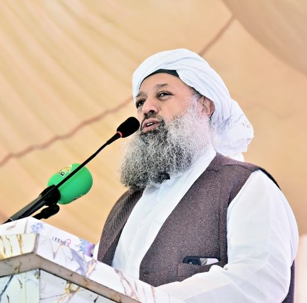
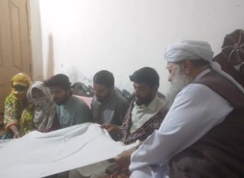
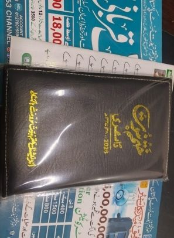

ٹرسٹ کا تعارف
11/09/2013 کو قائم ہونے والا اے کے این ٹرسٹ ایک ہی شعار کے تحت پاکستان کی خدمت کر رہا ہے: انسانوں میں سب سے بہتر وہ ہے جو انسانوں کو نفع پہنچائے — ایک نئی امید۔

قیام 11/09/2013ہم کون ہیں
انوار ختم نبوت ٹرسٹ پاکستان 11 ستمبر 2013 کو فضیلۃ الشیخ حضرت مولانا عبد الحفیظ مکی رحمۃ اللہ علیہ اور حضرت مولانا حافظ صغیر احمد رحمت اللہ کی زیر سرپرستی قائم ہوا۔
اس کا مقصد عقیدۂ ختم نبوت ﷺ کا دفاع اور ناموسِ رسالت ﷺ کا تحفظ؛ نو مسلمین کی کفالت؛ اور فلاحی و رفاہی کاموں کے ذریعے دعوت ہے — پاکستان بھر میں تعلیمی، سماجی اور فلاحی خدمات کے ساتھ۔
ہم کس چیز کا دفاع کرتے ہیں، اور کیوں
ٹرسٹ کے کام کے مرکز میں دو ذمہ داریاں ہیں — اسلام کے ایک بنیادی عقیدے کی حفاظت، اور اسے قبول کرنے والوں کے شانہ بشانہ کھڑا ہونا۔
تحفظِ ختم نبوت
ٹرسٹ کا قیام عقیدۂ ختم نبوت ﷺ کے دفاع اور ناموسِ رسالت ﷺ کے تحفظ کے لیے ہے۔ یہ کام اخلاص کے ساتھ نبوی طریق پر دعوت، لٹریچر اور کتب، پاکستان کے شہروں میں کورسز، اور ہزاروں مسلمانوں کے شکوک کے ازالے کے ذریعے کیا جاتا ہے۔
نو مسلمین کی کفالت
اسلام قبول کرنے والوں کو اکثر سماجی بائیکاٹ اور تنہائی کا سامنا کرنا پڑتا ہے۔ ٹرسٹ اس کا جواب کفالت سے دیتا ہے — راشن اور وظائف، روزگار اور قرضِ حسنہ، رہائش اور کرایہ معاونت، ان کے بچوں کی تعلیم، ان کی بیٹیوں کے نکاح کا اہتمام، اور لاہور کے دار الکفالہ میں مفت رہائش۔
مرکز سے صحرا تک
ٹرسٹ کا کام چناب نگر کے مرکز اور لاہور کے دفتر سے پھیلتے ہوئے پورے پنجاب اور اندرونِ سندھ تک پہنچتا ہے۔
مرکز — چناب نگر
صدر دفتر چناب نگر (محلہ نصرت آباد)، ضلع چنیوٹ، پنجاب میں — دعوتی کام، بیواؤں اور یتیموں کے ماہانہ وظائف، 20 گھروں میں ہینڈ پمپ، اور زیرِ تعمیر رفیق میڈیکل سینٹر کا مرکز۔
لاہور دفتر
55-غنی سٹریٹ، راجگڑھ، لاہور — مرکزی دفتر، جس کے پہلو میں دو منزلہ دار الکفالہ نو مسلمین کو مفت رہائش فراہم کرتا ہے، اور دفتر ختم نبوت راجگڑھ میں ایک کالج کا منصوبہ بھی ہے۔
پنجاب اور اندرونِ سندھ
پنجاب اور اندرونِ سندھ میں قرآنی مکاتب؛ تھرپارکر — مٹھی، کھوکھراپار، ننگرپار اور اسلام کوٹ — میں کنویں اور پمپ؛ پنجاب میں واٹر فلٹریشن پلانٹس؛ اور پاکستان کے شہروں میں ختم نبوت کورسز۔
قبولِ اسلام کی رپورٹ
ٹرسٹ کی نبوی طریق پر دعوت کے ذریعے سینکڑوں قادیانیوں نے اسلام قبول کیا — ان میں موجودہ قادیانی سربراہ مرزا مسرور کا رضاعی بھانجا شمس الدین، سابق مربی امیر منیر، نذیر احمد اور شاہد احمد، سابق مفتی محمد احمد، اور مرزا خاندان کے کئی افراد شامل ہیں — جبکہ ہزاروں مسلمانوں کے شکوک کا ازالہ کیا گیا۔

صرف گواہی نہیں، خوش آمدید بھی
ہر قبولِ اسلام کے بعد کفالت آتی ہے — دعوت کے انتظامات، تالیفِ قلب کی معاونت، بچوں کی تعلیم، روزگار، رہائش اور رشتے — تاکہ اسلام قبول کرنے والا کوئی بھی شخص سماجی بائیکاٹ کا اکیلا سامنا نہ کرے۔
شعبے کے بارے میں پڑھیے
میڈیا اور مطبوعات
تحفظِ ختم نبوت اور فتنۂ قادیانیت سے آگاہی کے لیے لٹریچر اور کتب۔
- ماہنامہ «انوار ختم نبوت» — کتب اور لٹریچر
- ویب چینل AKN63Channel
- فیس بک، یوٹیوب اور دیگر سوشل میڈیا پر سرگرم
”انسانوں میں سب سے بہتر وہ ہے جو انسانوں کو سب سے زیادہ نفع پہنچائے۔“
حدیث — المعجم الاوسط
اس کام کے ساتھ کھڑے ہوں
کال یا واٹس ایپ کیجیے — ہماری ٹیم آپ کے گھر سے آپ کی زکوٰۃ، صدقہ یا عطیہ وصول کرے گی — نقد یا چیک۔ اللہ آپ سے قبول فرمائے۔